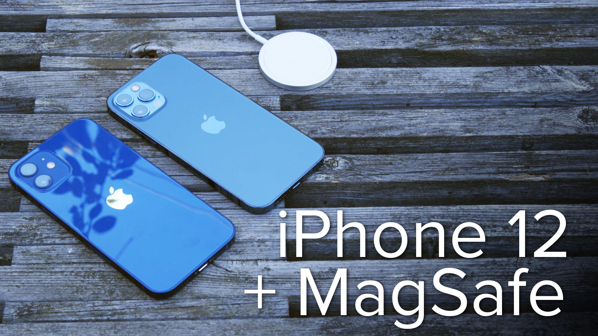

За Apple закрепился статус компании-первопроходца, от которой каждый раз ждут качественного рывка. Правда, в последние годы более осторожного и даже консервативного производителя на рынке нет — конкуренты из мира Android обогнали "яблоко" практически по всем технологическим аспектам.
В 12-й серии iPhone преобразились, но далеко не так, как ожидалось. Например, неприятным сюрпризом стала привычная частота обновления экрана в 60 герц, тогда как у конкурентов давно 90, 120 или даже 144 герца.

Вопреки прогнозам аналитиков, в Apple почему-то решили увеличить минимальный объем встроенного накопителя только на Pro-версиях. iPhone 12 и iPhone 12 Мini все так же довольствуются смехотворными по меркам 2020 года 64 гигабайтами памяти, которых вечно не хватает, особенно тем, кто любит снимать видеоролики. А ведь смартфон к этому располагает.
Автономность последних поколений iPhone уже не считается чем-то эталонным — конкуренты давно обошли Apple по времени работы на одном заряде и технологиям зарядки. Но в Купертино решили сделать ход конем: возродили хорошо известное пользователям старых MacBook имя MagSafe.
Новый MagSafe — это беспроводная зарядка с магнитами, позволяющими четко фиксировать смартфон на зарядном устройстве. На основе этих магнитов в Apple выпустили и целую россыпь аксессуаров, которые крепятся к спинке смартфона. Некоторые откровенно странные, например, кожаный держатель для карточек, который российскому покупателю предлагается за 5990 рублей. Абсурда добавляет то, что в iPhone давным-давно есть чип nfc и пользователи зачастую просто отказались от физических банковских (и не только) карт.
Магнитная зарядка от Apple позволяет заряжать устройство с мощностью в 15 ватт, тогда как от ЗУ других производителей iPhone будет брать 7,5 ватта. Но, судя по всему, это ограничение чисто программное — блогеры выяснили, что она построена на все том же стандарте Qi.
Изъятие блока питания и проводных наушников из комплекта поставки новых iPhone — пожалуй, одна из самых ярких новостей про 12-й айфон. Правда, не везде смартфоны пойдут без аксессуаров. Так, Франция вынудила Apple оставить наушники в коробке с iPhone 12.